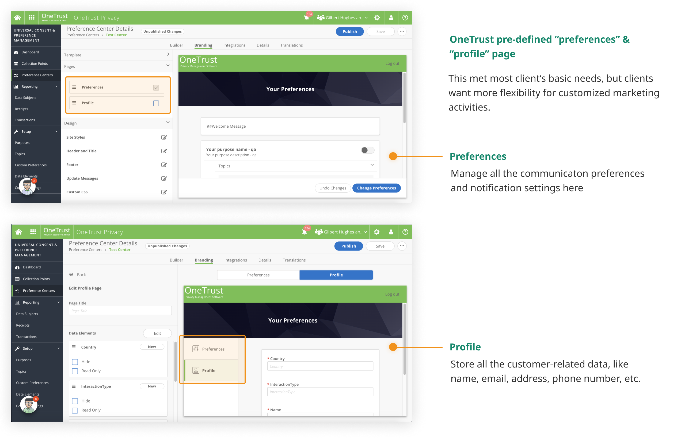
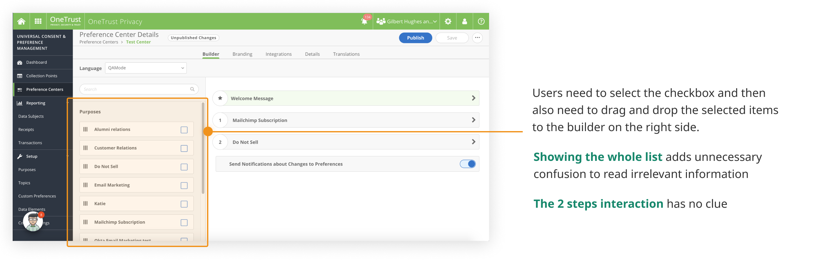
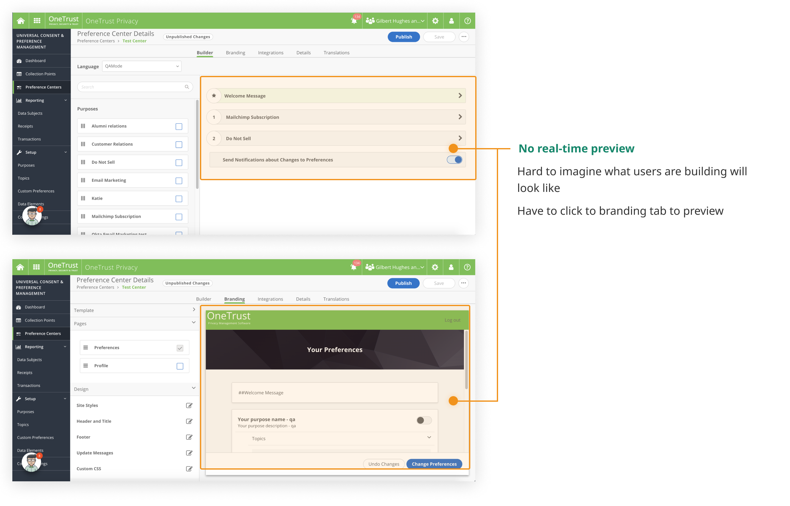
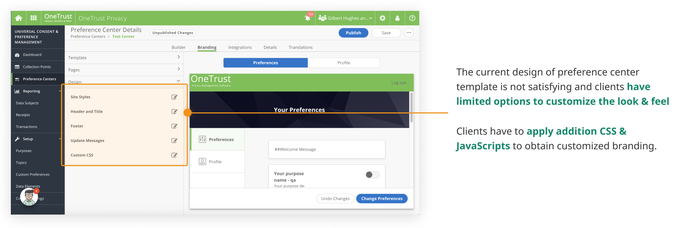

Preference Center Builder
Drag and drop to build a custom preference center and collect valid consents from site visitors
Team: Product Manager, Customer Supports @ OneTrust
Duration: July 2019 - Aug 2019
Key Words: Enterprise UX, Desktop Design
My Role: UX Design, Usability Testing
Overview
Background
In order to comply with the consent requirements of regulations including GDPR and CCPA, more and more organizations are using OneTrust Preference Management products to collect users' consent and preferences in their marketing and sales activities. The core of the entire consent lifecycle is to create custom-branded preference centers and give site visitors controls and visibility over their communication preferences.
Problem
The current product is more driven by the data modal of privacy regulations, rather than the creation of a good experience. However, there is an increasing need for businesses to integrate privacy with their marketing needs, which requires better control over the look and feel of their preference centers.
Research
Audit existing product
I conducted an audit of our current product, to better understand problem areas and the gaps between users’ needs. I also conducted an analysis of other website & email builders on the market, to learn from standards and insights already gained by other companies with similar needs.
Pain Point #1: Pages and content types on each page are pre-defined

Pain Point #2: Hard to add a new purpose to preference center in the UI

Pain Point #3: Need to click to Branding tab to preview the configurations

Pain Point #4: Limited options to control the look and feel for custom brands

Design
We went through several design iterations before arriving at the solution. Each design iteration surfaced risks and open questions, which we explored through the hallway and usability testing. Here’s our solution.
Enable the creation of multiple pages
Allow users to create pages as they need, as well as adding mixed contents and sections to any page.
Drag & drop to add contents to sections and pages
Drag and drop to edit the user interface, which is the most common method that's used in website builders on the market, which is more intuitive and reduces the necessary training time.
Provide a visual editor that is easy and efficient for marketing professionals
Allow users to create pages as they need, as well as adding mixed contents and sections to any page.
Improve the design of the default template and provide better controls of look and feel
Allow users to create pages as they need, as well as adding mixed contents and sections to any page.
Future Steps
Due to time and resource limitations, we didn't have a chance to conduct a solid usability testing to evaluate the design. The builder is in the development phase currently. After releasing this feature, we will get more feedback from Beta users.
In the meantime, we are planning the following features to enhance the value and usability of the preference center builder.
- Add a Branding Center to provide more granularity of controls on branding elements, so marketing professionals can have a centralized place to manage their branding languages to make them more consistent.
- Enhance the integration with two-factor authentication tools to provide a more secure login process and better identity verification experiences
- Integrate with other tools from OneTrust, like Consumer Rights and Cookies products, to make the preference center a unified portal for all privacy-related issues, so site visitors could have a more seamless experience to control preferences and personal data at one spot.